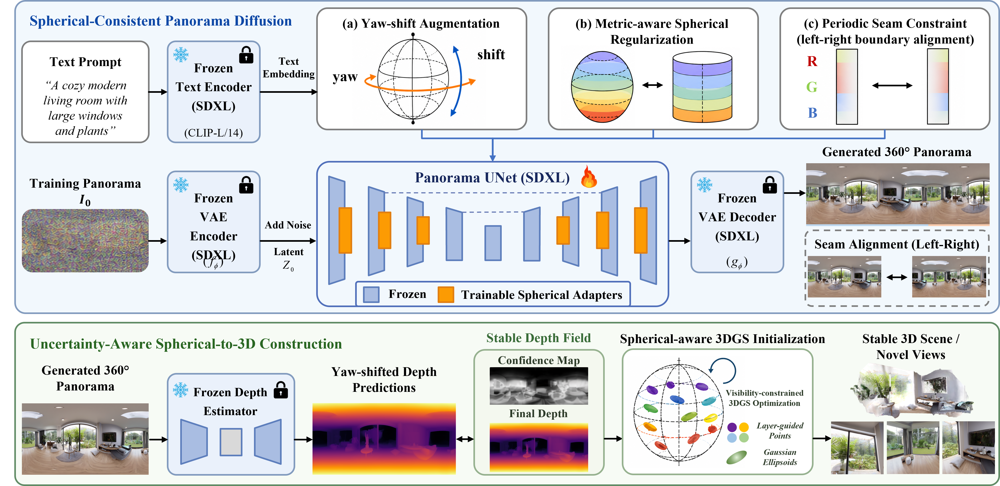

Overview. SphereScene generates coherent 360° panoramas and lifts them into stable 3D scenes by explicitly modeling spherical consistency across panorama synthesis, depth estimation, and Gaussian-based scene construction.
360° panoramas provide a compact spherical representation for text-driven 3D scene generation. However, objectives defined on the planar ERP grid are inconsistent with spherical geometry, leading to seam artifacts, polar distortions, unreliable depth, and unstable 3D lifting. SphereScene formulates panorama-based 3D scene generation under spherical-to-3D consistency. It uses a metric-corrected diffusion objective, yaw-shifted uncertainty-aware radial depth aggregation, and a layer-guided, solid-angle-aware 3D Gaussian construction strategy. Experiments show that the proposed formulation produces more coherent panoramas and more stable 3D scenes than representative baselines.
Video demonstration. The demo summarizes panorama generation, 3D scene construction, and representative rendered views produced by SphereScene.

Method overview. The upper part adapts panorama generation to the spherical domain through metric-aware regularization, while the lower part constructs a stable 3D scene using uncertainty-aware radial depth and solid-angle-aware Gaussian initialization.
We compare SphereScene with representative text-to-panorama generation methods. The highlighted regions indicate common failures in the spherical domain, including pole-region distortion and seam mismatch across the wrap-around boundary.

Main panorama comparison. SphereScene better preserves pole structures and seam continuity, producing panoramas that are more coherent as spherical observations.
| Method | FID ↓ | Aesthetic ↑ | CLIP-Score ↑ | CLIP-IQA ↑ | |
|---|---|---|---|---|---|
| Quality | Sharpness | ||||
| PanFusion | 56.86 | 4.42 | 26.09 | 0.64 | 0.25 |
| DiffPano | 60.72 | 4.48 | 30.94 | 0.74 | 0.27 |
| SMGD | 49.12 | 4.25 | 31.34 | 0.73 | 0.31 |
| SphereScene (Ours) | 44.50 | 4.73 | 33.51 | 0.80 | 0.31 |
Quantitative panorama generation results. SphereScene achieves the best overall performance in distribution quality, perceptual quality, and text alignment. Bold indicates the best result, and underline indicates the second-best result.

Outdoor panorama comparisons. Additional outdoor results comparing Ours, PanFusion, DiffPano, and SMGD.

Indoor panorama comparisons. Additional indoor results with more diverse scene layouts.
We further evaluate whether generated panoramas can be lifted into stable 3D scenes. The results include generated panoramas, rendered panoramas from the constructed 3D representation, and multiple novel-view renderings.

Main 3D scene comparison. Compared with baselines, SphereScene produces more coherent panoramas and more stable novel-view renderings.
| Method | Aesthetic ↑ | CLIP-Score ↑ | CLIP-IQA ↑ | BRISQUE ↓ | NIQE ↓ | |
|---|---|---|---|---|---|---|
| Quality | Sharpness | |||||
| LucidDreamer | 4.793 | 25.275 | 0.206 | 0.599 | 38.001 | 5.734 |
| DreamScene360 | 5.000 | 28.602 | 0.540 | 0.258 | 29.722 | 5.171 |
| LayerPano3D | 4.988 | 34.387 | 0.864 | 0.183 | 23.996 | 4.582 |
| SphereScene (Ours) | 5.236 | 38.714 | 0.880 | 0.579 | 19.699 | 3.270 |
Quantitative 3D rendering results. Rendered views from generated 3D scenes show that SphereScene improves semantic alignment and no-reference perceptual quality over representative baselines.

Outdoor scenes. Generated panoramas, rendered panoramas, and multi-view renderings produced by our method.

Indoor scenes. Additional indoor generated scenes with stable appearance and geometry.

Additional 3D comparison. We compare Ours, LucidDreamer, DreamScene360, and LayerPano3D on representative outdoor and indoor scenes. SphereScene better preserves scene closure and structural consistency.
We visualize the effects of removing each major component. The ablation variants are compared with the corresponding full model under the same prompt and viewpoint.

Visual ablation. Removing spherical regularization, uncertainty-aware depth aggregation, or solid-angle-aware Gaussian initialization leads to visible degradation in panorama coherence or 3D rendering stability.
| Variant | Aesthetic ↑ | CLIP-Score ↑ | CLIP-IQA ↑ | BRISQUE ↓ | NIQE ↓ | |
|---|---|---|---|---|---|---|
| Quality | Sharpness | |||||
| w/o Spherical Regularization | 4.125 | 22.087 | 0.206 | 0.257 | 36.375 | 5.535 |
| w/o Uncertainty-aware Depth | 5.051 | 34.420 | 0.824 | 0.489 | 26.500 | 4.074 |
| w/o Solid-angle Gaussian Init. | 4.793 | 34.688 | 0.802 | 0.525 | 24.147 | 3.833 |
| Full Model | 5.236 | 38.714 | 0.880 | 0.579 | 19.699 | 3.270 |
Quantitative ablation results. Each component contributes to the final scene quality, and the full model achieves the best performance across all reported metrics.
Drag each panorama horizontally to inspect the wrap-around continuity. The panels use the original 2:1 equirectangular panoramas and repeat them along the horizontal direction for continuous browsing.
A panoramic view of a modern bedroom with a large bed and warm ambient lighting.
A panoramic view captures a quiet residential street lined with small houses, parked cars.
A photorealistic view of a modern living room with a sofa and warm indoor lighting.
A panoramic urban street with buildings, sidewalks, parked cars, and cloudy daylight.
A panoramic view captures a compact studio apartment with a bed and a clean modern layout.
A panoramic forest trail surrounded by tall trees and dense green vegetation.
A panoramic view captures a stylish living room with a fireplace, a comfortable sofa set.
A panoramic view captures a wide, overcast outdoor scene featuring a paved intersection near a campus area with trees.